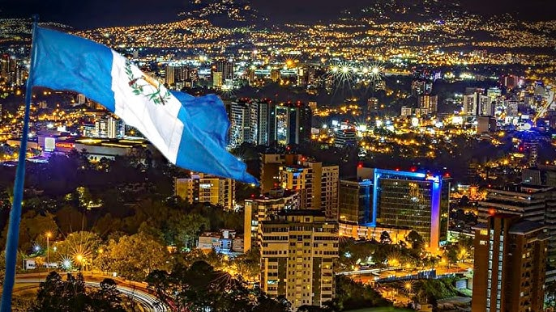

Ciudad de Guatemala es la capital del país y el centro político, cultural y económico de Guatemala. Con una mezcla de historia, modernidad y diversidad, ofrece desde museos hasta centros comerciales, zonas arqueológicas y una vibrante vida urbana.
Es el punto de entrada principal al país y una ciudad llena de contrastes, con barrios históricos, arquitectura moderna y una rica vida cultural.
Ubicación: Departamento de Guatemala, región central del país.
Actividades: Visitar el Palacio Nacional, la Catedral Metropolitana, museos como el Popol Vuh o el Ixchel del Traje Indígena, caminar por el Paseo de la Sexta y disfrutar de su gastronomía variada.
